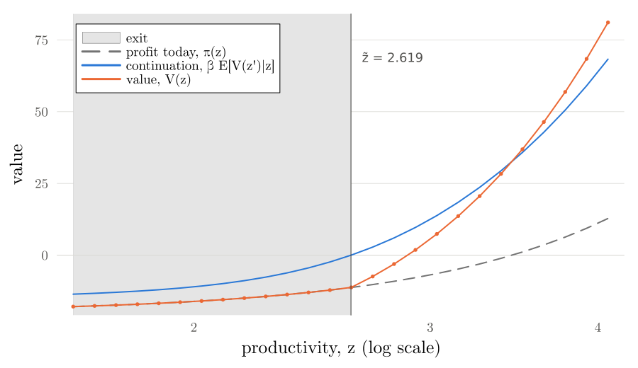
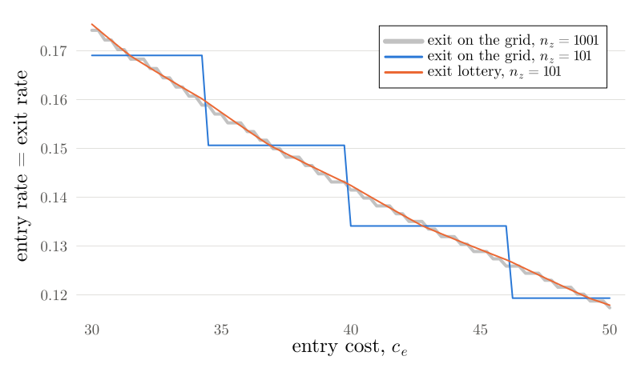

EC991 Topics in Macroeconomics · Week 5 Lab
Weeks 3 and 4 solved for households. This week the heterogeneous agents are firms: productivity follows a Markov chain, firms decide whether to stay or exit, and entry pins down the price. The equilibrium comes in two blocks: the price from free entry, then the number of firms from the goods market.
In VS Code, open your EC991 folder and choose Pull in the Source Control pane, or from a terminal:
cd EC991 # wherever you cloned it in week 1
git pullA new folder appears next to week04:
EC991/
└── week05/
└── lab/
├── week05_code_guide.html # this page
└── EC991Week5/ # the package: all the code
├── Project.toml, Manifest.toml, README.md
├── src/
├── run/
└── test/Then copy the whole lab folder into your own repository and commit it, as in earlier weeks.
cp -R EC991/week05/lab ec991-work/week05Copy-Item -Recurse EC991\week05\lab ec991-work\week05the folder ec991-work/week05/EC991Week5 exists and git log --oneline -1 in ec991-work shows your commit.
In Aiyagari, every guess of $r$ needed the household problem, the distribution and the market in turn. Here the law of motion of the measure of firms is linear in the mass of entrants $M$, so the price can be found without knowing $M$ (slide 32):
| Block | Lecture | Function |
|---|---|---|
| Set-up | grid, $F$, $g$ (slide 34) | Industry, setup |
| 1. The price | Step 1: profits at $p$ | static_decisions |
| Step 2: the incumbent's Bellman equation | solve_firm | |
| Step 3: the value of entry | entry_value | |
| Step 4: update $p$ | solve_price | |
| 2. The firms | Step 5: the measure for one unit of entrants | stationary_measure |
| Step 6: the mass of entrants | mass_of_entrants |
All of it in one call:
eq = solve_equilibrium(Industry()) # VFI, default parameters
eq = solve_equilibrium(Industry(); method = :policy_iteration)
eq = solve_equilibrium(Industry(); exit = :lottery) # Part 8As before, the only package beyond the standard library is Plots, used by the run scripts.
Same rules: src/ never plots or prints, run/ holds no model logic, test/ checks against known answers. Slide numbers are pages of the week 5 lecture, unless marked as tutorial slides.
| File | What it holds | Slides |
|---|---|---|
markov.jl | week 3's Tauchen, now around a mean; stationary; discretise_normal | 34 |
static.jl | efficient_allocation, aggregate_tfp, allocation_with_wedges, misallocation, planner_entry | 7 to 22 |
industry.jl | Industry, setup, static_decisions | 26, 34, 41 |
bellman.jl | bellman_step!, solve_firm, evaluate_policy, solve_policy_iteration, exit_threshold, exit_lottery | 27, 28, 35; tutorial 5, 6, 13 to 15 |
entry.jl | entry_value, solve_price | 29, 36 |
distribution.jl | exit_transition, stationary_measure, cohorts | 30, 37 |
equilibrium.jl | mass_of_entrants, Equilibrium, solve_equilibrium | 32, 38, 39 |
statistics.jl | industry_stats, size_distribution, age_profile | 45; tutorial 11, 12 |
simulate.jl | simulate_panel | Part 12 |
A fixed set of firms, $y_i = z_i n_i^{\eta}$. Every function takes the productivities z and, optionally, weights m: the mass of firms at each $z$. With equal marginal products, $n_i \propto z_i^{1/(1-\eta)}$ (slide 9):
function efficient_allocation(z, N; η, m = ones(length(z)))
# each firm's weight: employment is proportional to z^(1/(1-η))
s = z .^ (1 / (1 - η))
# share out the N workers in proportion to the weights
n = N .* s ./ sum(m .* s)
# output of each firm, then total output over all firms
y = z .* n .^ η
return (; n, y, Y = sum(m .* y))
endThe two-firm example on slide 12 is a test: efficient_allocation([1.0, 2.0], 9.0; η = 2/3) gives $n = (1, 8)$ and $Y = 9$, and aggregate_tfp gives $Z = 9^{1/3}$, so $Z N^{\eta} = 9$.
With wedges, a firm hires as if its productivity were $(1+\tau_i) z_i$, but produces with $z_i$ (slides 14 and 15). The misallocation term, with $x_i = z_i^{1/(1-\eta)}$:
$$\Omega = \frac{\sum_i m_i x_i (1+\tau_i)^{\eta/(1-\eta)}}{\big(\sum_i m_i x_i (1+\tau_i)^{1/(1-\eta)}\big)^{\eta}\big(\sum_i m_i x_i\big)^{1-\eta}} .$$function misallocation(z, τ; η, m = ones(length(z)))
# x_i = z_i^(1/(1-η)): how much firm i would hire without wedges
x = z .^ (1 / (1 - η))
# t_i = 1 + τ_i: how much the wedge scales firm i's productivity when hiring
t = 1 .+ τ
# numerator: output with wedges; denominator: the same labour, allocated efficiently
return sum(m .* x .* t .^ (η / (1 - η))) / (sum(m .* x .* t .^ (1 / (1 - η)))^η * sum(m .* x)^(1 - η))
endThe tests check that $\Omega = 1$ for a common wedge, and that allocation_with_wedges's output equals $Z \Omega N^{\eta}$ computed this way.
At price $p$, static_decisions gives $n(z_i)$, $y(z_i)$ and $\pi(z_i)$ in closed form (slide 26). The incumbent's Bellman equation then has only a discrete choice (slide 35):
function bellman_step!(V1, V0, π, F, β)
# the continuation value at every z_i: one matrix product, written into V1
mul!(V1, F, V0)
# stay if the continuation value is positive, exit (value 0) if not
@. V1 = π + β * max(V1, 0.0)
return V1
end| Code | Maths |
|---|---|
mul!(V1, F, V0) | $\sum_j F_{ij} V^n(z_j)$ for every $i$: the continuation value |
max(V1, 0.0) | stay or exit; exit is worth zero |
π + β * … | profit today, plus the discounted best option |
solve_firm: three methods (tutorial slides 5 and 6)sol = solve_firm(π, F, β; method = :vfi) # iterate bellman_step!
sol = solve_firm(π, F, β; method = :howard) # n_H evaluations between steps
sol = solve_firm(π, F, β; method = :policy_iteration) # evaluate each exit rule exactlyHoward holds the exit rule fixed for $n_H$ updates between Bellman steps:
$$V^{k+1}(z_i) = \pi(z_i) + \beta\, \big[1 - \chi(z_i)\big] \sum_j F_{ij} V^k(z_j) .$$# inside solve_firm, after each Bellman step, when method = :howard
# read the exit rule off the current value: stay where EV ≥ 0
mul!(EV, F, V1)
stay = EV .>= 0
# hold that rule fixed and update the value n_H times, with no max
for _ in 1:n_H
mul!(EV, F, V1)
# stayers: profit + discounted continuation value; exiters: profit only
@. V1 = π + β * stay * EV
endWith the exit rule $\chi$ fixed, the Bellman equation has no maximum left and is linear in $V$, so a fixed rule can be evaluated exactly:
$$V = \big(I - \beta\, \mathrm{diag}(1-\chi)\, F\big)^{-1} \pi .$$function evaluate_policy(χ, π, F, β)
# I - β diag(1 - χ) F: row i of F is scaled by 1 - χ_i, so exiters lose their future
A = I - β .* (1 .- χ) .* F
# solve the linear system A V = π in one step
return A \ π
endPolicy iteration starts from "never exit", evaluates, sets $\chi_i = 1$ wherever $\sum_j F_{ij} V_j < 0$, and repeats until $\chi$ stops changing:
χ = falses(length(π)) # start: no one exits
for n in 1:maxiter
# evaluate: the exact value of following χ forever
V = evaluate_policy(χ, π, F, β)
# the continuation value at every grid point under that value
EV = F * V
# improve: exit wherever the continuation value is negative
χ_new = EV .< 0
# stop when the improved rule is the rule just evaluated
χ_new == χ && return FirmSolution(V, EV, χ, n, distances)
χ = χ_new
endexit_threshold finds $\tilde z$ between the last grid point that exits and the first that stays, where the continuation value, interpolated linearly in $\log z$, is zero (slide 28):
function exit_threshold(sol::FirmSolution, z)
# the first grid point that stays; the one before it is the last that exits
k = findfirst(.!sol.χ)
(k === nothing || k == 1) && return (z̃ = NaN, k = k)
# log z and the continuation value at those two neighbours
lo, hi = log(z[k-1]), log(z[k])
EVlo, EVhi = sol.EV[k-1], sol.EV[k]
# the straight line between them crosses zero at log z̃
return (z̃ = exp(lo + (hi - lo) * (0 - EVlo) / (EVhi - EVlo)), k = k)
end
Below $\tilde z$ the firm produces this period and exits, so $V = \pi$. On 8 grid points just above $\tilde z$ profit is negative, but the firm stays, because $z$ is expected to recover.
The value of entry at price $p$ (slide 36), with $g_i$ the probability that an entrant draws $z_i$:
$$V^e(p) = -c_e + \beta \sum_i g_i V(z_i;\, p) .$$function entry_value(p, ind::Industry, s; method = :vfi, V_start = nothing)
(; η, β, c_e, c_f) = ind
# Step 1: labour, output and profit at every grid point, at this price
dec = static_decisions(p, s.z; η, c_f)
# Step 2: the incumbent's value function and exit rule, given those profits
sol = solve_firm(dec.π, s.F, β; method, V_start)
# Step 3: pay c_e, draw z from g, and receive the discounted value of that z
Ve = -c_e + β * sum(s.g .* sol.V)
return (; Ve, sol, dec, p)
end$V$ rises with $p$, so $V^e$ does too, and bisection finds the root, as it found $r$ in week 4:
# widen the bracket until entry is unprofitable at lo and profitable at hi
while evaluate(lo).Ve > 0; lo /= 2; end
while evaluate(hi).Ve < 0; hi *= 2; end
# halve the bracket until it is narrow enough
e = last[]
while hi - lo > tol_p * hi
e = evaluate((lo + hi) / 2)
# V^e > 0: entering pays, so the price must fall. Otherwise it must rise
e.Ve > 0 ? (hi = e.p) : (lo = e.p)
endDemand $\bar D$ never enters: free entry alone pins down the price.
$\hat F$ is $F$ with the rows of exiting firms set to zero, and the stationary measure solves a linear system (slide 37):
$$\mu = \hat F' \mu + M g \qquad \Longrightarrow \qquad \mu = M (I - \hat F')^{-1} g .$$# F̂: the rows of exiting firms set to zero
exit_transition(F, χ) = (1 .- χ) .* F
function stationary_measure(F̂, g; M = 1.0, method = :linear, tol = 1e-12, maxiter = 100_000)
# :linear: μ = F̂' μ + M g rearranges to (I - F̂') μ = M g, solved in one step
method === :linear && return (I - F̂') \ (M .* g)
# method = :iterate: apply the law of motion from μ = 0, as in week 4
…
endTwo differences from week 4's $\lambda$. First, the transpose: F[i, j] is the probability of moving from $z_i$ to $z_j$, so mass moves with $\hat F'$. Second, $\mu$ is a measure: it does not sum to one, and doubling $M$ doubles it.
So $\mu$ is computed once, for $M = 1$, and the goods market gives $M$ in one line (slide 38):
$$M = \frac{\bar D / p}{\sum_i y(z_i;\, p)\, \mu_i(p, 1)} .$$# goods market: D̄ / p = M Σ_i y_i μ1_i, solved for M
mass_of_entrants(p, y, μ1; D̄) = (D̄ / p) / sum(y .* μ1)And the whole equilibrium:
function solve_equilibrium(ind::Industry = Industry(); method = :vfi, exit = :grid, kwargs...)
# the grid z, the transition matrix F and the entrants' probabilities g
s = setup(ind)
# Steps 1 to 4: the price at which free entry holds
e, history = solve_price(ind, s; method, kwargs...)
# the exit rule the measure uses: 0 or 1 on the grid, or with the lottery cell
χ = exit === :grid ? Float64.(e.sol.χ) : exit === :lottery ? exit_lottery(e.sol, s.z) :
throw(ArgumentError("exit must be :grid or :lottery"))
# Step 5: remove the exiters' rows from F, then the measure for one unit of entrants
F̂ = exit_transition(s.F, χ)
μ1 = stationary_measure(F̂, s.g)
# Step 6: the mass of entrants that clears the goods market
M = mass_of_entrants(e.p, e.dec.y, μ1; ind.D̄)
M > 0 || error("no entry at p = $(e.p): see slide 39")
# store everything, with the measure scaled up: μ = M μ1
return Equilibrium(…)
endOn the grid, the exit rule can only switch at a grid point. When $c_e$ rises, $\tilde z$ moves smoothly, but the exit rate stays put until $\tilde z$ crosses a grid point, then jumps (tutorial slides 13 to 15).
Grid point $z_i$ stands for the cell of $\log z$ within half a step of $\log z_i$: the Tauchen bins. Cells wholly below $\tilde z$ exit, cells wholly above stay, and in the one cell that contains $\tilde z$ the share below it exits:
function exit_lottery(sol::FirmSolution, z)
# start from the grid rule: 1 = exit, 0 = stay
χ = Float64.(sol.χ)
# the interpolated threshold z̃, and k, the first grid point that stays
(; z̃, k) = exit_threshold(sol, z)
isnan(z̃) && return χ
# the grid step d in log z, and the threshold t in log z
logz = log.(z)
d = logz[2] - logz[1]
t = log(z̃)
# the cell that contains t: point k-1's cell if t is below their midpoint, else point k's
i = t < logz[k-1] + d / 2 ? k - 1 : k
# that cell exits in proportion to the part of it below t
χ[i] = clamp((t - (logz[i] - d / 2)) / d, 0.0, 1.0)
return χ
end$\chi$ is now a share between 0 and 1, and exit_transition works unchanged. The price does not move, because it depends only on $V$.

| $n_z$ | Price $p$ | Exit rate, grid | Exit rate, lottery | $\tilde z$ |
|---|---|---|---|---|
| 51 | 1.48150 | 0.1417 | 0.1410 | 2.6148 |
| 101 | 1.48617 | 0.1341 | 0.1424 | 2.6188 |
| 201 | 1.48723 | 0.1382 | 0.1419 | 2.6172 |
| 501 | 1.48753 | 0.1407 | 0.1417 | 2.6168 |
| 1001 | 1.48758 | 0.1415 | 0.1417 | 2.6168 |
| 2001 | 1.48759 | 0.1419 | 0.1417 | 2.6168 |
The price and $\tilde z$ settle fast; the exit rate on the grid does not.
industry_stats(eq) gives the table on tutorial slide 12. Two identities are worth checking yourself: the entry rate $M / \sum_i \mu_i$ equals the exit rate $\sum_i \chi_i \mu_i / \sum_i \mu_i$, because entrants replace exits one for one; and production labour is exactly $\eta \bar D$, because firms pay the share $\eta$ of revenue $pY = \bar D$ to production workers.
Mean age needs no simulation. The firms of age $a$ are $(\hat F')^a M g$, so
$$\bar a = \frac{\sum_a a\, (\hat F')^a g}{\sum_a (\hat F')^a g} \quad \text{summed over } i, \qquad \sum_a (\hat F')^a = (I - \hat F')^{-1}, \quad \sum_a a (\hat F')^a = \hat F' (I - \hat F')^{-2} .$$# A = I - F̂': the sums over all ages, in closed form
A = I - F̂'
# x = Σ_a (F̂')^a g: firms of every age, per unit of entrants
x = A \ eq.s.g
# Σ_a a (F̂')^a g = (I - F̂')⁻¹ F̂' x, divided by the number of firms
mean_age = sum(A \ (F̂' * x)) / sum(x)cohorts(F̂, g, A) moves one cohort forward year by year, and age_profile(eq, A) turns it into survival, average size and the exit rate by age (slide 45). size_distribution(eq, edges) gives the shares of firms and of employment by size class (tutorial slide 11).
From inside ec991-work/week05/EC991Week5:
julia --project=. -e "using Pkg; Pkg.instantiate()" # once
julia --project=. run/static_examples.jl # the static economy: two firms, wedges, entry
julia --project=. run/solve_equilibrium.jl # the equilibrium by VFI, step by step
julia --project=. run/solve_equilibrium.jl howard # the same with Howard (or policy_iteration)
julia --project=. run/compare_methods.jl # VFI, Howard and policy iteration: iterations and time
julia --project=. run/comparative_statics.jl # higher c_e, higher c_f; grid vs lottery
julia --project=. run/simulate_panel.jl # a 10-year panel of firms (Part 12)
julia --project=. run/make_figures.jl # the figures on the slides
julia --project=. -e "using Pkg; Pkg.test()" # the checksusing EC991Week5
eq = solve_equilibrium(Industry())
industry_stats(eq)
eq.μ # the measure of firms on the grid
size_distribution(eq, [0, 10, 20, 50, 100, 500, Inf])
age_profile(eq, 20)
industry_stats(solve_equilibrium(Industry(c_e = 60))) # any parameter by nameDefault parameters, 101-point grid:
| Statistic | Baseline | $c_e = 60$ | $c_f = 30$ |
|---|---|---|---|
| price $p$ | 1.4862 | 1.5973 | 1.5974 |
| entry rate = exit rate | 0.134 | 0.106 | 0.190 |
| average size (workers) | 104.0 | 120.6 | 142.4 |
| output $Y$ | 67.29 | 62.60 | 62.60 |
| exit threshold $\tilde z$ | 2.619 | 2.348 | 2.869 |
| mean age (years) | 11.5 | 13.7 | 8.7 |
| number of firms | 0.641 | 0.553 | 0.468 |
One solve of the incumbent's problem at $p = 1.4862$ from $V = \pi$, one thread on a 2.2 GHz server, after a warm-up. Your times will differ; the pattern should not.
| Method | Iterations | Time (ms), $n_z = 101$ | Time (ms), $n_z = 1001$ |
|---|---|---|---|
| VFI | 57 | 0.15 | 16 |
| VFI + Howard ($n_H = 20$) | 5 | 0.21 | 24 |
| policy iteration | 4 | 1.03 | 131 |
Fewer iterations, but not less time. The "maximisation" is max(·, 0), so an evaluation costs as much as a full Bellman step, and policy iteration's linear solve grows with $n_z^3$.
julia --project=. -e "using Pkg; Pkg.test()"They check the two-firm example and $\Omega$, the planner's entry choice against brute force, the firm's first-order condition and profit formula, that the three methods agree, that the exit rule is a threshold, that iterating the measure equals solving for it, market clearing, and that a simulated panel matches the stationary equilibrium. The last line should say tests passed.
| You see | Cause and fix |
|---|---|
| The first run is much slower than the second | Julia compiles on first use. Time the second call, in the same REPL session. |
| The exit rate does not move when you change a cost | The threshold has not crossed a grid point. Use exit = :lottery or more grid points. |
sum(eq.μ) is not one | Correct: $\mu$ is a measure, and its total is the number of firms. |
| Wrong distribution, or mass that does not move | Check the transpose: mass moves with F̂', because F[i, j] is the move from $z_i$ to $z_j$. |
| The run scripts are slow on a many-core machine | Small matrices and many BLAS threads. Add using LinearAlgebra; BLAS.set_num_threads(1), as make_figures.jl does. |
Package EC991Week5 not found | Julia is in your default environment. Run from inside EC991Week5/ with --project=.. |
The equilibrium gives a measure of firms, $\mu$. To get data shaped like a firm panel, follow individual firms through the same law of motion, $\mu' = \hat F' \mu + M g$. Each simulated year:
With $N M / \sum_i \mu_i$ entrants a year, the industry settles at about $N$ firms. The simulation starts from an empty industry and runs a burn-in before recording, so every firm's age is known:
function simulate_panel(eq::Equilibrium; T = 10, N = 1000, burn_in = 100, rng = Random.default_rng())
(; F, g, z) = eq.s
# entrants per year, so that the industry holds about N firms
n_entrants = round(Int, N * eq.M / sum(eq.μ))
# cumulative probabilities: a uniform draw u picks the first index where the sum exceeds u
G = cumsum(g)
Fcum = cumsum(F; dims = 2)
draw(cdf) = min(searchsortedfirst(cdf, rand(rng)), length(cdf))
# the firms alive at the start of the year: id, grid index, age
ids, iz, age = Int[], Int[], Int[]
next_id = 1
# the panel, one entry per firm and recorded year
panel = (; firm = Int[], year = Int[], iz = Int[], z = Float64[], n = Float64[],
y = Float64[], age = Int[], exit = Bool[])
for t in 1:(burn_in + T)
# 1. entrants arrive, draw z from g, and start at age 0
for _ in 1:n_entrants
push!(ids, next_id); push!(iz, draw(G)); push!(age, 0)
next_id += 1
end
# 3. each firm draws its exit decision: exit with probability χ at its grid point
leaves = [rand(rng) < eq.χ[i] for i in iz]
# 2. after the burn-in, record what every firm produces this year
if t > burn_in
append!(panel.firm, ids); append!(panel.year, fill(t - burn_in, length(ids)))
append!(panel.iz, iz); append!(panel.z, z[iz])
append!(panel.n, eq.n[iz]); append!(panel.y, eq.y[iz])
append!(panel.age, age); append!(panel.exit, leaves)
end
# 4. survivors move to next year's productivity, drawn from their row of F, and age
stay = .!leaves
ids, age = ids[stay], age[stay] .+ 1
iz = [draw(view(Fcum, i, :)) for i in iz[stay]]
end
return panel
endA firm's productivity is drawn by comparing a uniform draw with the cumulative probabilities: draw(G) for an entrant, draw(view(Fcum, i, :)) for a survivor at grid point $z_i$.
In the REPL:
using EC991Week5, Random
eq = solve_equilibrium(Industry())
panel = simulate_panel(eq; T = 10, N = 1000, rng = MersenneTwister(1234))
panel.n[panel.year .== 1] # employment of every firm in year 1
panel.firm[panel.exit] # the firms that exit, one entry per exitOr run the script, which prints the panel's averages next to the model's and writes panel.csv, one row per firm and year:
julia --project=. run/simulate_panel.jl| Statistic | Panel, $N = 1000$ | Model |
|---|---|---|
| exit rate | 0.1386 | 0.1341 |
| entry rate | 0.1330 | 0.1341 |
| average size (workers) | 101.01 | 103.96 |
| mean age (years) | 11.41 | 11.45 |
The gaps are sampling noise and shrink as $N$ grows.